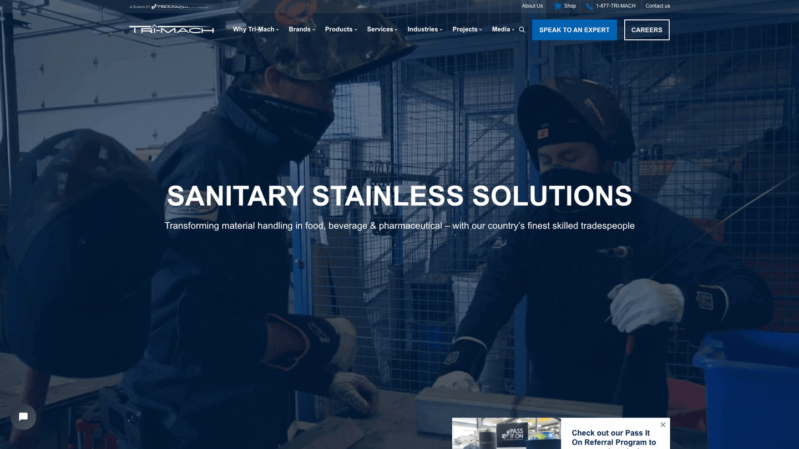
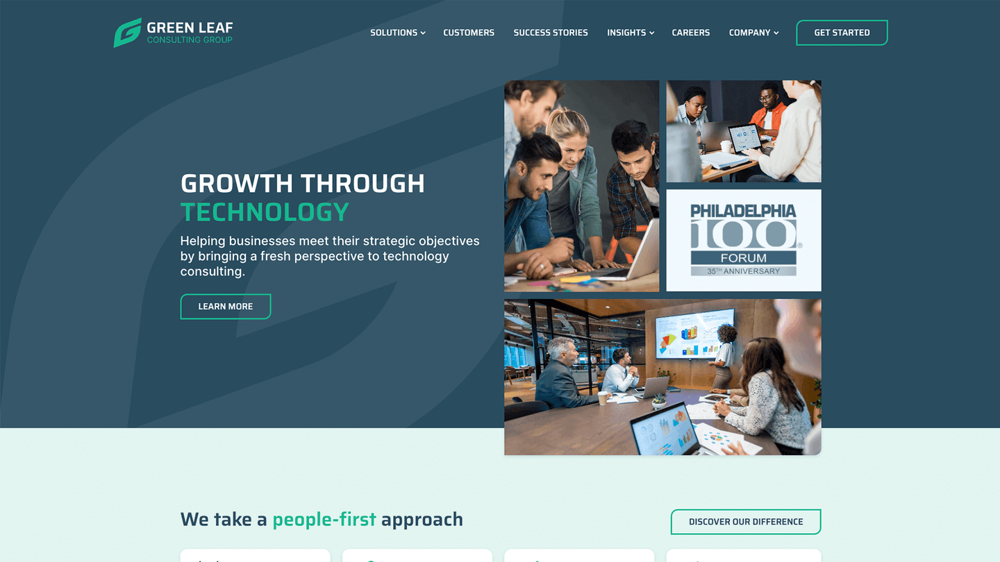
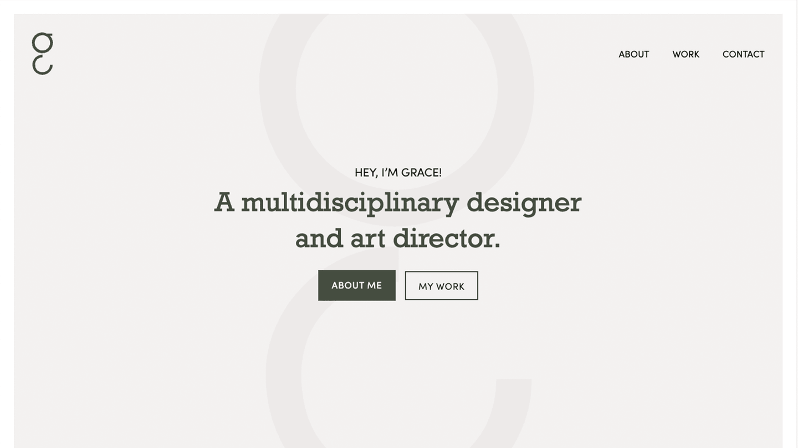
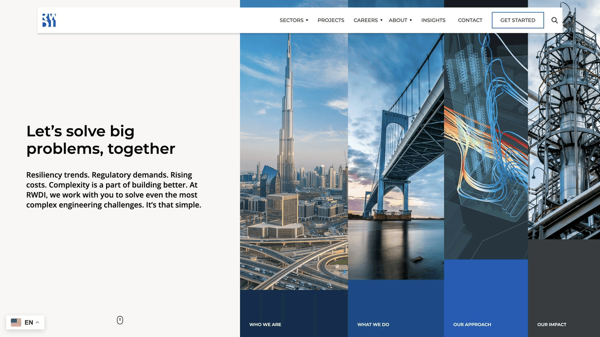

Tillsonburg, Ontario
Custom WordPress Developer in Tillsonburg
A nearby web developer and designer building fast, accessible custom WordPress websites for Tillsonburg businesses, manufacturers, and trades.
Websites start at $2,000 + HST. A short drive away in Delhi.
- 14+ years building for the web
- Based nearby in Delhi
- Goosechase co-founder
WordPress development & web design for Tillsonburg
Tillsonburg has grown well beyond its tobacco-belt roots into a busy hub for manufacturing, agriculture, retail, and a growing residential community drawing people from across southwestern Ontario. With that growth comes real competition for local customers, and a website that loads slowly or looks dated puts established businesses at a disadvantage.
I am a web designer and custom WordPress developer based a short drive away in Delhi, so Tillsonburg is part of my home turf. I help manufacturers, trades, retailers, and professional firms move onto clean, fast WordPress sites that are easy to update, built to be found in local search, and designed to turn visitors into customers.
Custom WordPress themes
Clean, maintainable theme development built around your Tillsonburg brand and customers.
Web design & Figma to WordPress
Thoughtful design and precise front-end implementation for Tillsonburg businesses.
ACF & Gutenberg blocks
Flexible editing systems that let your team update pages without wrecking the design.
Local search-ready builds
Fast, structured sites with the metadata and markup that help Tillsonburg businesses get found.
WordPress maintenance
Support for existing Tillsonburg WordPress sites: updates, fixes, cleanup, and improvements.
Nearby, senior support
A senior WordPress developer based a short drive away in Delhi, not a distant agency.
Selected WordPress work
A sample of custom WordPress and front-end work for organizations, brands, and growing businesses. See all projects.




Our team at Stryve loves working with Quinn! Quinn is knowledgeable, responsive, and energetic. We highly recommend him for web development!
Get in Touch
If you need a Tillsonburg WordPress developer or web designer, start with a free consultation. Call 226-338-1659 or email quinn@battersby.ca. See also my Norfolk County and Delhi pages.
Tillsonburg FAQ
- Do you work with Tillsonburg businesses?
Yes. I build custom WordPress websites and web designs for Tillsonburg businesses, manufacturers, trades, and nonprofits, from new builds to redesigns and ongoing support.
- How much does a Tillsonburg website cost?
Custom WordPress websites start at $2,000 + HST. The final estimate depends on scope, design, content, and features. The first consultation is free.
- Are you local to Tillsonburg?
Yes. I am based in nearby Delhi, a short drive from Tillsonburg, so local businesses get a senior WordPress developer and web designer who is genuinely close by.